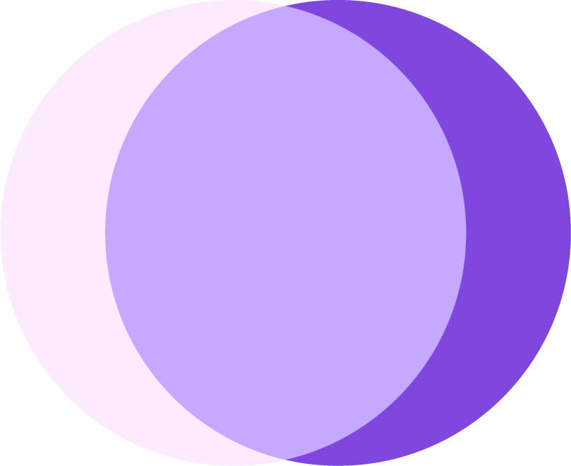

Your notes,
faster and just better.
Capture ideas instantly via chat or write deeply. The minimalist iOS notes app that respects your flow.


Faster than everrrr!
Open the app. Write a quick note. Chat with yourself, all in one place.
Automations in seconds
bubbles detects intent and creates reminders with a single click.
Voice Magic
No hands to type? bubbles transcribes your voice into a note automatically.